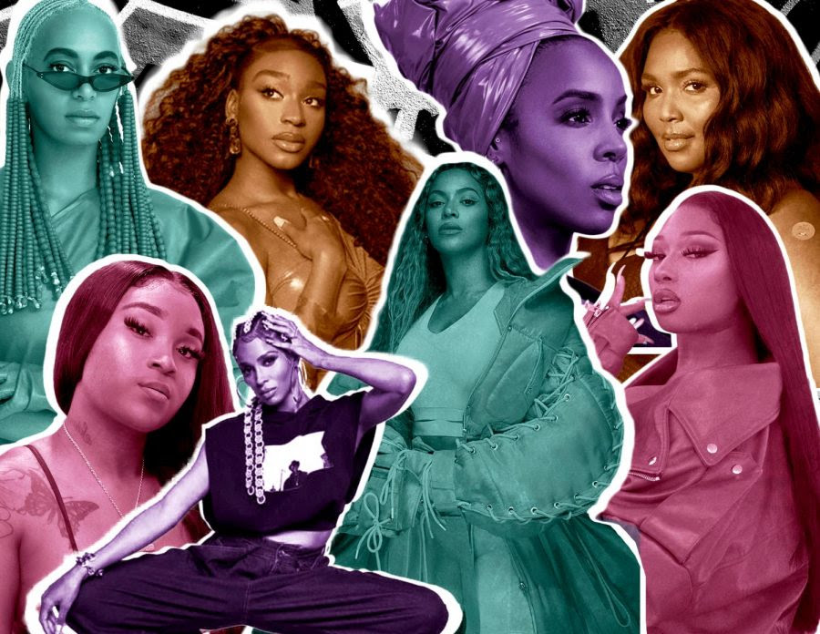

Exploring the intersection of identity and place, Onyx Voices Rising centers Black women music artists across genres, eras, and geographic locations. You experience artists whose contributions shaped the American soundtrack, allowing to interact with map-based icons that reveal images, brief narratives, artistic influences, and curated resources. Through a digital scope, you learn the significance of Black women’s musical legacies while emphasizing how location and lived experience inform creativity and cultural impact.